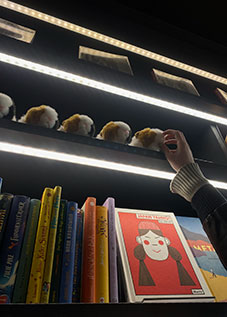
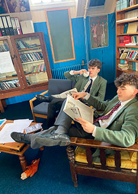
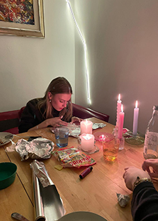
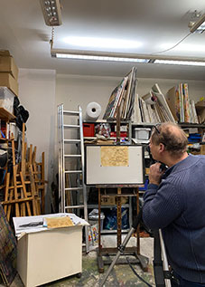
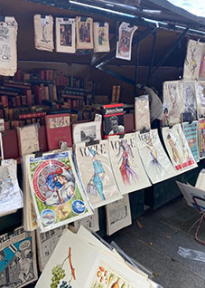
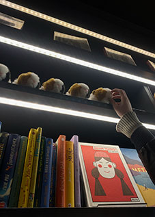
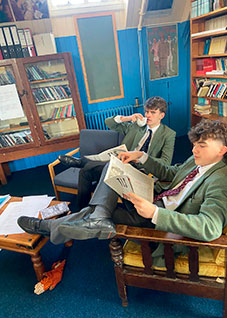
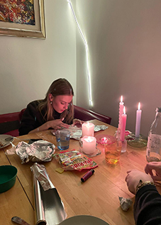
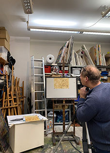
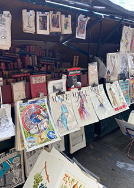

20.02.2026,
Lange Nacht der Bücher
Seid ihr Literatur begeistert, versinkt gerne in Büchern oder einfach nur Neugierig, dann kommt am 20.02 zu unserer alljährlichen Nacht der Bücher. Das Antiquariat Retro & Rare öffnet am Freitag Abend seine Türen und widmet die Nacht voll un ganz der Bücher, komm vorbei.
Euch erwartet eine gemütliche Atmosphäre mit Kerzenlicht und entspannter Musik. Ihr könnt entspannt stöbern oder den Geschichten lauschen die den Abend ueber vorgelesen werden. Es gibt Tee und Wein gegen eine kleine Spende.
25.02.2026,
Lesung: Vergessene Stimmen
Seid ihr geschichtsinteressiert und begeistert euch für alte Bücher und deren Autoren, dann kommt am 25.02 zu uns ins Retro & Rare.
Euch erwarten seltene Texte, von längst vergessenen Autoren, welche unserer Meinung nach, aber wichtige Sachen geschrieben haben, denen wir gerade in den heutigen Zeiten zuhören sollten. Anschliessend seid ihr noch zu einem gemütlichen Zusammensein mit Gespräch eingeladen.
03.04.2026,
Bücher- und Kunstmarkt
Auch dieses Jahr werden wir wieder auf dem alljährlichen Bücher und Kunstmarkt vertreten sein und euch eine Auswahl besonderer Stücke mitbringen, kommt doch vorbei.
Der Markt ist dafür bekannt, Künstler aus der Region auszustellen und ihnen eine Bildfläche zu bieten. Bei unserem Stand fokussieren wir uns auf seltene Drucke, Bücher und kleinere Objekte. Aber auch wenn ihr nichts kaufen wollt, freuen wir uns, wenn ihr uns besuchen kommt und wir ein nettes Gespräch haben.

 








